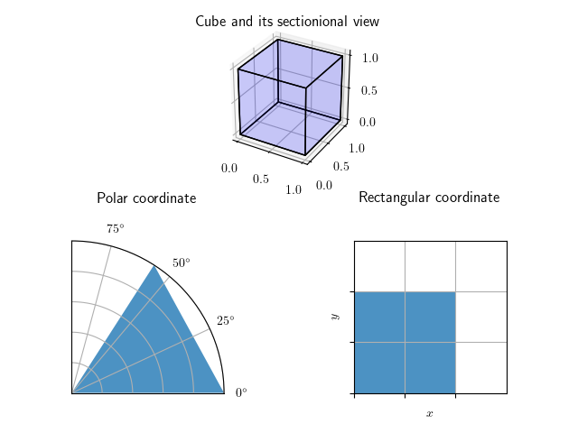

この記事は,
旧ブログ から移植された記事です. よって, その内容として,
旧ブログ に依存した文脈が含まれている可能性があります. 予めご了承下さい.
以前のエントリ, ガウス積分の公式とその証明 で, 暗に極座標での微小面積が r d r d θ rdrd\theta r d r d θ
極座標の微小面積
直交座標から極座標へ移行する際に, その微小面積はどうなるかについて考察する.
立方体とその断面
上図は, 1 × 1 × 1 1\times 1\times 1 1 × 1 × 1 d r d θ drd\theta d r d θ d r d θ drd\theta d r d θ r r r
ここで微小面積を導出するために, r , θ r,\theta r , θ Δ r , Δ θ \Delta r,\Delta \theta Δ r , Δ θ
微小面積の導出
r r r θ \theta θ Δ s \Delta s Δ s Δ s \Delta s Δ s r r r Δ θ \Delta\theta Δ θ
Δ s = 1 2 ( r + Δ r ) 2 Δ θ − 1 2 r 2 Δ θ = r Δ r Δ θ + 1 2 ( Δ r ) 2 Δ θ \Delta s=\dfrac{1}{2}(r+\Delta r)^2\Delta\theta-\dfrac{1}{2}r^2\Delta\theta
=r\Delta r\Delta\theta+\dfrac{1}{2}(\Delta r)^2\Delta\theta Δ s = 2 1 ( r + Δ r ) 2 Δ θ − 2 1 r 2 Δ θ = r Δ r Δ θ + 2 1 ( Δ r ) 2 Δ θ
lim Δ θ , Δ r → 0 \displaystyle\lim_{\Delta\theta,\Delta r\to 0} Δ θ , Δ r → 0 lim Δ r Δ θ \Delta r\Delta\theta Δ r Δ θ Δ s \Delta s Δ s r d r d θ rdrd\theta r d r d θ
…というように, ここまでは幾何学的なイメージを用いて, 直交座標と極座標間における微小面積の遷移について考察したが, 異なる座標系への変換をしようとする度にいちいち図などを用いて考察するのは面倒であり, 従って, より機械的/一般的にこれを実行する手法について考えることは自然な流れと言える. よって, 以降はそれを主題として話を進めていく.
ところで微積分では, 今もそうして行ったように, 極限の概念を多大に用いるので, ここで本題に入る前にその定義に関して触れておくこととする.
ϵ − δ \epsilon-\delta ϵ − δ ϵ − δ \epsilon-\delta ϵ − δ
f f f を実数の部分集合
D D D で定義された実数値関数,
c c c を
D D D の極限点,
L L L を実数としたとき,
lim x → c f ( x ) = L ⇔ ( ∀ ϵ > 0 , ∃ δ > 0 , ∀ x ∈ D , 0 < ∣ x − c ∣ < δ ⇒ ∣ f ( x ) − L ∣ < ϵ ) \displaystyle
\lim_{x\to c}f(x)=L\Leftrightarrow(^\forall\epsilon\gt 0,^\exists\delta\gt 0,^\forall x\in D,0\lt\left|x-c\right|\lt\delta\Rightarrow\left|f(x)-L\right|\lt\epsilon) x → c lim f ( x ) = L ⇔ ( ∀ ϵ > 0 , ∃ δ > 0 , ∀ x ∈ D , 0 < ∣ x − c ∣ < δ ⇒ ∣ f ( x ) − L ∣ < ϵ )
D = [ a , b ] D=[a,b] D = [ a , b ] D = R D=\mathbb{R} D = R c c c D = R D=\mathbb{R} D = R ϵ − δ \epsilon-\delta ϵ − δ
∀ ϵ > 0 , ∃ δ > 0 , s . t . ∀ x ∈ R , ∣ x − c ∣ < δ ⇒ ∣ f ( x ) − L ∣ < ϵ ^\forall\epsilon\gt 0,^\exists\delta\gt 0,\ {\rm s.t.}\ ^\forall x\in\mathbb{R}, \left|x-c\right|\lt\delta\Rightarrow\left|f(x)-L\right|\lt\epsilon ∀ ϵ > 0 , ∃ δ > 0 , s . t . ∀ x ∈ R , ∣ x − c ∣ < δ ⇒ ∣ f ( x ) − L ∣ < ϵ
となる. 日本語で記述すると「任意の実数 ∀ x ∈ R ^\forall x\in\mathbb{R} ∀ x ∈ R ∣ x − c ∣ < δ \left|x-c\right|\lt\delta ∣ x − c ∣ < δ ϵ \epsilon ϵ ∣ f ( x ) − L ∣ < ϵ \left|f(x)-L\right|\lt\epsilon ∣ f ( x ) − L ∣ < ϵ δ \delta δ f ( x ) f(x) f ( x ) x = c x=c x = c y = f ( x ) y=f(x) y = f ( x ) x = c x=c x = c L L L ϵ \epsilon ϵ c c c δ \delta δ L L L
c c c δ \delta δ L L L
これは, さきに書いた論理式を満たすことがわかる. 上図の ϵ \epsilon ϵ δ \delta δ f ( x ) f(x) f ( x ) x = c x=c x = c δ \delta δ ϵ − δ \epsilon-\delta ϵ − δ
ところで, この「任意の実数 ∀ x ∈ R ^\forall x\in\mathbb{R} ∀ x ∈ R ∣ x − c ∣ < δ \left|x-c\right|\lt\delta ∣ x − c ∣ < δ ϵ \epsilon ϵ ∣ f ( x ) − L ∣ < ϵ \left|f(x)-L\right|\lt\epsilon ∣ f ( x ) − L ∣ < ϵ δ \delta δ x x x c c c f ( x ) f(x) f ( x ) L L L L L L L L L ϵ − δ \epsilon-\delta ϵ − δ ϵ − δ \epsilon-\delta ϵ − δ どんなに小さな任意の ϵ \epsilon ϵ ∣ x − c ∣ < δ \left|x-c\right|\lt\delta ∣ x − c ∣ < δ ∣ f ( x ) − L ∣ < ϵ \left|f(x)-L\right|\lt\epsilon ∣ f ( x ) − L ∣ < ϵ δ \delta δ f ( x ) f(x) f ( x ) x → c x\to c x → c lim x → c f ( x ) \displaystyle\lim_{x\to c}f(x) x → c lim f ( x ) L L L .
より一般的な変数変換
極限に関して厳密な定義ができたところで, 本題に入るが, 問題そのものを的確に把握することは, 問題を解く上で最も重要な過程であるので, 異なる座標系への移行という行為が一体どういうことなのかについてここで整理しておく.
異なる座標系への移行とは何か
唐突であるが, D D D x , y x,y x , y ∫ ∫ D ( x − y ) e x + y d x d y , D = ( x , y ) ∣ 0 ≤ x + y ≤ 2 , 0 ≤ x − y ≤ 2
\int\int_{D}(x-y)e^{x+y}dxdy, D={(x,y)|0\leq x+y\leq 2, 0\leq x-y\leq 2}
∫ ∫ D ( x − y ) e x + y d x d y , D = ( x , y ) ∣ 0 ≤ x + y ≤ 2 , 0 ≤ x − y ≤ 2 u = x + y , v = x − y u=x+y,v=x-y u = x + y , v = x − y D D D E E E u , v u,v u , v ∫ ∫ E v e u d u d v , E = ( u , v ) ∣ 0 ≤ u ≤ 2 , 0 ≤ v ≤ 2
\int\int_{E}ve^ududv, E={(u,v)|0\leq u\leq 2,0\leq v\leq 2}
∫ ∫ E v e u d u d v , E = ( u , v ) ∣ 0 ≤ u ≤ 2 , 0 ≤ v ≤ 2 x = ϕ ( t ) x=\phi(t) x = ϕ ( t ) ∫ x 1 x 2 f ( x ) d x ≠ ∫ t 1 t 2 f ( ϕ ( t ) ) d t \displaystyle\int_{x_1}^{x_2}f(x)dx\not =\int_{t_1}^{t^2}f(\phi(t))dt ∫ x 1 x 2 f ( x ) d x = ∫ t 1 t 2 f ( ϕ ( t ) ) d t ∫ x 1 x 2 f ( x ) d x = ∫ t 1 t 2 f ( ϕ ( t ) ) ϕ ′ ( t ) d t \displaystyle\int_{x_1}^{x_2}f(x)dx =\int_{t_1}^{t^2}f(\phi(t))\phi'(t)dt ∫ x 1 x 2 f ( x ) d x = ∫ t 1 t 2 f ( ϕ ( t ) ) ϕ ′ ( t ) d t 面積比 に相当することになる. つまり, その一般解を得ることで, 異なる座標系間での移行が可能となるのである.
幾何学的なアプローチ
微積分学的な言葉を使ったアプローチを行う前に, 図形的意味を重視してまず書くこととする.
そもそも重積分というのは, ある座標系における微小面積と, ある関数 f f f u , v u,v u , v x = ϕ ( u , v ) , y = ψ ( u , v ) x=\phi(u,v), y=\psi(u,v) x = ϕ ( u , v ) , y = ψ ( u , v )
早速であるが, u u u u + Δ u u+\Delta u u + Δ u v v v v + Δ v v+\Delta v v + Δ v u , v u,v u , v ϕ , ψ \phi, \psi ϕ , ψ
O ( ϕ ( u , v ) , ψ ( u , v ) ) A ( ϕ ( u + Δ u , v ) , ψ ( u + Δ u , v ) ) B ( ϕ ( u , v + Δ v ) , ψ ( u , v + Δ v ) ) C ( ϕ ( u + Δ u , v + Δ v ) , ψ ( u + Δ , v + Δ v ) )
\begin{array}{l}
O(\phi(u,v),\psi(u,v)) \\
A(\phi(u+\Delta u, v), \psi(u+\Delta u,v)) \\
B(\phi(u,v+\Delta v), \psi(u,v+\Delta v)) \\
C(\phi(u+\Delta u,v+\Delta v), \psi(u+\Delta,v+\Delta v))
\end{array} O ( ϕ ( u , v ) , ψ ( u , v ) ) A ( ϕ ( u + Δ u , v ) , ψ ( u + Δ u , v ) ) B ( ϕ ( u , v + Δ v ) , ψ ( u , v + Δ v ) ) C ( ϕ ( u + Δ u , v + Δ v ) , ψ ( u + Δ , v + Δ v ) )
などと書き表わせる(頂点それぞれに, 適当に記号を割り振った. また, わかり易さのために頂点 C C C
さて, これらの頂点から成る四角形は, 極限の基で近似的に平行四辺形となるということを予めここで言ってしまおう. 従って, その平行四辺形の面積 S S S ( O A → , O B → ) (\overrightarrow{OA}, \overrightarrow{OB}) ( O A , O B ) O A → \overrightarrow{OA} O A A A A O O O 偏微分 そのもので, 線形近似により,
ϕ ( u + Δ u , v ) − ϕ ( u , v ) ≈ ∂ ϕ ∂ u Δ u ψ ( u + Δ u , v ) − ψ ( u , v ) ≈ ∂ ψ ∂ u Δ u
\begin{aligned}
\phi(u+\Delta u, v)-\phi(u,v)&\approx&\dfrac{\partial \phi}{\partial u}\Delta u \\
\psi(u+\Delta u, v)-\psi(u,v)&\approx&\dfrac{\partial \psi}{\partial u}\Delta u
\end{aligned}
ϕ ( u + Δ u , v ) − ϕ ( u , v ) ψ ( u + Δ u , v ) − ψ ( u , v ) ≈ ≈ ∂ u ∂ ϕ Δ u ∂ u ∂ ψ Δ u
と書ける. 従って, O B → \overrightarrow{OB} O B
O A → ≈ ( ∂ ϕ ∂ u Δ u , ∂ ψ ∂ u Δ u ) O B → ≈ ( ∂ ϕ ∂ v Δ v , ∂ ψ ∂ v Δ v )
\begin{aligned}
\overrightarrow{OA}&\approx&\left(\dfrac{\partial \phi}{\partial u}\Delta u,\dfrac{\partial \psi}{\partial u}\Delta u\right) \\
\overrightarrow{OB}&\approx&\left(\dfrac{\partial \phi}{\partial v}\Delta v,\dfrac{\partial \psi}{\partial v}\Delta v\right)
\end{aligned}
O A O B ≈ ≈ ( ∂ u ∂ ϕ Δ u , ∂ u ∂ ψ Δ u ) ( ∂ v ∂ ϕ Δ v , ∂ v ∂ ψ Δ v )
と書ける. あとは, これらから成る行列の行列式の絶対値を求めれば良いから,
S ≈ ∣ d e t ( ∂ ϕ ∂ u Δ u ∂ ϕ ∂ v Δ v ∂ ψ ∂ u Δ u ∂ ψ ∂ v Δ v ) ∣ ≈ ∣ d e t ( ∂ ϕ ∂ u ∂ ϕ ∂ v ∂ ψ ∂ u ∂ ψ ∂ v ) ∣ Δ u Δ v
\begin{aligned}
S&\approx&\left|{\rm det}\left(
\begin{array}{cc}
\dfrac{\partial \phi}{\partial u}\Delta u&\dfrac{\partial \phi}{\partial v}\Delta v \\
\dfrac{\partial \psi}{\partial u}\Delta u&\dfrac{\partial \psi}{\partial v}\Delta v
\end{array}
\right)\right| \\
&\approx&\left|{\rm det}\left(
\begin{array}{cc}
\dfrac{\partial \phi}{\partial u}&\dfrac{\partial \phi}{\partial v} \\
\dfrac{\partial \psi}{\partial u}&\dfrac{\partial \psi}{\partial v}
\end{array}
\right)\right|\Delta u\Delta v
\end{aligned}
S ≈ ≈ ∣ ∣ ∣ ∣ ∣ ∣ ∣ ∣ d e t ⎝ ⎜ ⎜ ⎛ ∂ u ∂ ϕ Δ u ∂ u ∂ ψ Δ u ∂ v ∂ ϕ Δ v ∂ v ∂ ψ Δ v ⎠ ⎟ ⎟ ⎞ ∣ ∣ ∣ ∣ ∣ ∣ ∣ ∣ ∣ ∣ ∣ ∣ ∣ ∣ ∣ ∣ d e t ⎝ ⎜ ⎜ ⎛ ∂ u ∂ ϕ ∂ u ∂ ψ ∂ v ∂ ϕ ∂ v ∂ ψ ⎠ ⎟ ⎟ ⎞ ∣ ∣ ∣ ∣ ∣ ∣ ∣ ∣ Δ u Δ v
Δ u , Δ v \Delta u, \Delta v Δ u , Δ v
≈ ∣ d e t ( ∂ ϕ ∂ u ∂ ϕ ∂ v ∂ ψ ∂ u ∂ ψ ∂ v ) ∣ d u d v (1)
\begin{aligned}
&\approx&\left|{\rm det}\left(
\begin{array}{cc}
\dfrac{\partial \phi}{\partial u}&\dfrac{\partial \phi}{\partial v} \\
\dfrac{\partial \psi}{\partial u}&\dfrac{\partial \psi}{\partial v}
\end{array}
\right)\right|dudv\tag{1}
\end{aligned}
≈ ∣ ∣ ∣ ∣ ∣ ∣ ∣ ∣ d e t ⎝ ⎜ ⎜ ⎛ ∂ u ∂ ϕ ∂ u ∂ ψ ∂ v ∂ ϕ ∂ v ∂ ψ ⎠ ⎟ ⎟ ⎞ ∣ ∣ ∣ ∣ ∣ ∣ ∣ ∣ d u d v ( 1 )
( 1 ) (1) ( 1 ) ( 1 ) (1) ( 1 )
全微分
全微分は, 偏微分に関してもう一度考えることで納得できる. (先に線形代数的アプローチで, 偏微分は自明なものとして使ってしまったが)そもそも偏微分はなんだったかといえば, 多変数関数の特定の変数以外を定数と捉えて微分することであった.
U U U を
R n R^n R n の開部分集合とし, 函数
f : U → R f:U\to R f : U → R に対して,
x = ( x 1 , ⋯ , x n ) ∈ U {\bf x}=(x_1, \cdots, x_n) \in U x = ( x 1 , ⋯ , x n ) ∈ U の
i i i 番目の変数
x i x_i x i における
f f f の偏微分は
∂ ∂ x i f ( x ) : = lim Δ x i → 0 f ( x 1 , ⋯ , x i + Δ x i , ⋯ , x n ) − f ( x 1 , ⋯ , x i , ⋯ , x n ) Δ x i \displaystyle
\dfrac{\partial}{\partial x_i}f({\bf x}) := \lim_{\Delta x_i\to 0}\dfrac{f(x_1,\cdots,x_i+\Delta x_i,\cdots,x_n)-f(x_1,\cdots,x_i,\cdots,x_n)}{\Delta x_i} ∂ x i ∂ f ( x ) : = Δ x i → 0 lim Δ x i f ( x 1 , ⋯ , x i + Δ x i , ⋯ , x n ) − f ( x 1 , ⋯ , x i , ⋯ , x n )
要するに, f f f
∂ f ( x , y ) ∂ x : = lim Δ → 0 f ( x + Δ , y ) − f ( x , y ) Δ ∂ f ( x , y ) ∂ y : = lim Δ → 0 f ( x , y + Δ ) − f ( x , y ) Δ
\begin{aligned}
\frac{\partial f(x, y)}{\partial x} &:=& \lim_{\Delta \to 0} \frac{f(x + \Delta, y) - f(x, y)}{\Delta}\\
\frac{\partial f(x, y)}{\partial y} &:=& \lim_{\Delta \to 0} \frac{f(x, y + \Delta) - f(x, y)}{\Delta}
\end{aligned}
∂ x ∂ f ( x , y ) ∂ y ∂ f ( x , y ) : = : = Δ → 0 lim Δ f ( x + Δ , y ) − f ( x , y ) Δ → 0 lim Δ f ( x , y + Δ ) − f ( x , y )
である. これを踏まえて, 2 変数関数における全微分を導出することを考える. 簡単に言ってしまえば, 偏微分が 2 変数以上の関数のただ 1 つを変数とみなして, その微小変化に対する変化量を求めることであったのに対し, 全微分は, 全ての変数の微小変化に対する変化量を求めることである. まず変数 x , y x, y x , y Δ x , Δ y \Delta x,\Delta y Δ x , Δ y Δ f \Delta f Δ f
Δ f = f ( x + Δ x , y + Δ y ) − f ( x , y ) = f ( x + Δ x , y + Δ y ) − f ( x , y + Δ y ) + f ( x , y + Δ y ) − f ( x , y ) (2)
\begin{aligned}
\Delta f&=&f(x+\Delta x, y+\Delta y)-f(x,y) \\
&=&f(x+\Delta x, y+\Delta y)-f(x,y+\Delta y)+f(x,y+\Delta y)-f(x,y) \tag{2}
\end{aligned}
Δ f = = f ( x + Δ x , y + Δ y ) − f ( x , y ) f ( x + Δ x , y + Δ y ) − f ( x , y + Δ y ) + f ( x , y + Δ y ) − f ( x , y ) ( 2 )
式 \(\) の改行位置を変えるとわかりやすいが,
Δ f = f ( x + Δ x , y + Δ y ) − f ( x , y + Δ y ) + f ( x , y + Δ y ) − f ( x , y ) (3)
\Delta f=f(x+\Delta x, y+\Delta y)-f(x,y+\Delta y)
+f(x,y+\Delta y)-f(x,y) \tag{3}
Δ f = f ( x + Δ x , y + Δ y ) − f ( x , y + Δ y ) + f ( x , y + Δ y ) − f ( x , y ) ( 3 )
いま, それぞれの部分に着目すると, f ( x + Δ x , y + Δ y ) − f ( x , y + Δ y ) f(x+\Delta x, y+\Delta y)-f(x,y+\Delta y) f ( x + Δ x , y + Δ y ) − f ( x , y + Δ y ) x x x f f f f ( x , y + Δ y ) − f ( x , y ) f(x,y+\Delta y)-f(x,y) f ( x , y + Δ y ) − f ( x , y ) y y y f f f ( 2 ) (2) ( 2 )
Δ f = f ( x + Δ x , y + Δ y ) − f ( x , y + Δ y ) Δ x Δ x + f ( x , y + Δ y ) − f ( x , y ) Δ y Δ y \begin{aligned}
\displaystyle
\Delta f&=&\dfrac{f(x+\Delta x, y+\Delta y)-f(x,y+\Delta y)}{\Delta x}\Delta x \\
&+&\dfrac{f(x,y+\Delta y)-f(x,y)}{\Delta y}\Delta y
\end{aligned}
Δ f = + Δ x f ( x + Δ x , y + Δ y ) − f ( x , y + Δ y ) Δ x Δ y f ( x , y + Δ y ) − f ( x , y ) Δ y
この式が微分の定義式と酷似していることに気づけば, Δ x , Δ y \Delta x,\Delta y Δ x , Δ y
d f = lim d x , d y → 0 f ( x + d x , y + d y ) − f ( x , y + d y ) d x d x + lim d x , d y → 0 f ( x , y + d y ) − f ( x , y ) d y d y (4)
\displaystyle
df=\lim_{dx,dy\to 0}\dfrac{f(x+dx, y+dy)-f(x,y+dy)}{dx}dx+
\lim_{dx,dy\to 0}\dfrac{f(x,y+dy)-f(x,y)}{dy}dy \tag{4}
d f = d x , d y → 0 lim d x f ( x + d x , y + d y ) − f ( x , y + d y ) d x + d x , d y → 0 lim d y f ( x , y + d y ) − f ( x , y ) d y ( 4 )
lim d x , d y → 0 \displaystyle\lim_{dx,dy\to 0} d x , d y → 0 lim lim d x , d y → 0 f ( x + d x , y + d y ) − f ( x , y + d y ) d x d x \lim_{dx,dy\to 0}\dfrac{f(x+dx, y+dy)-f(x,y+dy)}{dx}dx lim d x , d y → 0 d x f ( x + d x , y + d y ) − f ( x , y + d y ) d x lim d x , d y → 0 f ( x + d x , y ) − f ( x , y ) d x \displaystyle\lim_{dx,dy\to 0}\dfrac{f(x+dx, y)-f(x,y)}{dx} d x , d y → 0 lim d x f ( x + d x , y ) − f ( x , y ) ( 4 ) (4) ( 4 ) ∂ \partial ∂ d f = ∂ f ∂ x d x + ∂ f ∂ y d y (5) df=\dfrac{\partial f}{\partial x}dx+\dfrac{\partial f}{\partial y}dy\tag{5} d f = ∂ x ∂ f d x + ∂ y ∂ f d y ( 5 ) f f f ( 5 ) (5) ( 5 ) f f f
全積分とヤコビアン
先に x = ϕ ( u , v ) , y = ψ ( u , v ) x=\phi(u,v), y=\psi(u,v) x = ϕ ( u , v ) , y = ψ ( u , v ) x , y x,y x , y
d x = ∂ ϕ ∂ u d u + ∂ ϕ ∂ v d v d y = ∂ ψ ∂ u d u + ∂ ψ ∂ v d v
\begin{aligned}
dx&=&\dfrac{\partial\phi}{\partial u}du+\dfrac{\partial\phi}{\partial v}dv \\
dy&=&\dfrac{\partial\psi}{\partial u}du+\dfrac{\partial\psi}{\partial v}dv
\end{aligned}
d x d y = = ∂ u ∂ ϕ d u + ∂ v ∂ ϕ d v ∂ u ∂ ψ d u + ∂ v ∂ ψ d v
となる. いまこれを行列で表すと,
( d x d y ) = ( ∂ ϕ ∂ u ∂ ϕ ∂ u ∂ ψ ∂ v ∂ ψ ∂ v ) ( d u d v )
\begin{aligned}
\begin{pmatrix}
dx \\
dy
\end{pmatrix}=
\begin{pmatrix}
\dfrac{\partial\phi}{\partial u}&\dfrac{\partial\phi}{\partial u} \\
\dfrac{\partial\psi}{\partial v}&\dfrac{\partial\psi}{\partial v}
\end{pmatrix}
\begin{pmatrix}
du \\
dv
\end{pmatrix}
\end{aligned}
( d x d y ) = ⎝ ⎜ ⎜ ⎛ ∂ u ∂ ϕ ∂ v ∂ ψ ∂ u ∂ ϕ ∂ v ∂ ψ ⎠ ⎟ ⎟ ⎞ ( d u d v )
となる. この行列の行列式
d e t ( ∂ ϕ ∂ u ∂ ϕ ∂ v ∂ ψ ∂ u ∂ ψ ∂ v )
\begin{aligned}
{\rm det}
\left(
\begin{array}{cc}
\dfrac{\partial\phi}{\partial u}&\dfrac{\partial\phi}{\partial v} \\
\dfrac{\partial\psi}{\partial u}&\dfrac{\partial\psi}{\partial v}
\end{array}
\right)
\end{aligned}
d e t ⎝ ⎜ ⎜ ⎛ ∂ u ∂ ϕ ∂ u ∂ ψ ∂ v ∂ ϕ ∂ v ∂ ψ ⎠ ⎟ ⎟ ⎞ ∂ ( ϕ , ψ ) ∂ u , v \dfrac{\partial(\phi,\psi)}{\partial{u,v}} ∂ u , v ∂ ( ϕ , ψ ) J ( u , v ) {\rm J}(u, v) J ( u , v )
n n n ( f 1 ⋮ f n ) = ( ∂ f 1 ∂ x 1 ⋯ ∂ f 1 ∂ x n ⋮ ⋱ ⋮ ∂ f n ∂ x 1 ⋯ ∂ f n ∂ x n ) ( d x 1 ⋮ d x n )
\begin{aligned}
\begin{pmatrix}
f_1 \\
\vdots \\
f_n
\end{pmatrix}=
\begin{pmatrix}
\dfrac{\partial f_1}{\partial x_1}&\cdots&\dfrac{\partial f_1}{\partial x_n} \\
\vdots&\ddots&\vdots \\
\dfrac{\partial f_n}{\partial x_1}&\cdots&\dfrac{\partial f_n}{\partial x_n}
\end{pmatrix}
\begin{pmatrix}
dx_1 \\
\vdots \\
dx_n
\end{pmatrix}
\end{aligned}
⎝ ⎜ ⎜ ⎛ f 1 ⋮ f n ⎠ ⎟ ⎟ ⎞ = ⎝ ⎜ ⎜ ⎜ ⎜ ⎜ ⎛ ∂ x 1 ∂ f 1 ⋮ ∂ x 1 ∂ f n ⋯ ⋱ ⋯ ∂ x n ∂ f 1 ⋮ ∂ x n ∂ f n ⎠ ⎟ ⎟ ⎟ ⎟ ⎟ ⎞ ⎝ ⎜ ⎜ ⎛ d x 1 ⋮ d x n ⎠ ⎟ ⎟ ⎞ d e t ( ∂ f 1 ∂ x 1 ⋯ ∂ f 1 ∂ x n ⋮ ⋱ ⋮ ∂ f n ∂ x 1 ⋯ ∂ f n ∂ x n )
\begin{aligned}
{\rm det}\left(
\begin{array}{ccc}
\dfrac{\partial f_1}{\partial x_1}&\cdots&\dfrac{\partial f_1}{\partial x_n} \\
\vdots&\ddots&\vdots \\
\dfrac{\partial f_n}{\partial x_1}&\cdots&\dfrac{\partial f_n}{\partial x_n}
\end{array}\right)
\end{aligned}
d e t ⎝ ⎜ ⎜ ⎜ ⎜ ⎜ ⎛ ∂ x 1 ∂ f 1 ⋮ ∂ x 1 ∂ f n ⋯ ⋱ ⋯ ∂ x n ∂ f 1 ⋮ ∂ x n ∂ f n ⎠ ⎟ ⎟ ⎟ ⎟ ⎟ ⎞ ∂ ( f 1 , ⋯ , f n ) ∂ ( x 1 , ⋯ , x n ) \dfrac{\partial(f_1,\cdots,f_n)}{\partial(x_1,\cdots,x_n)} ∂ ( x 1 , ⋯ , x n ) ∂ ( f 1 , ⋯ , f n ) J ( x 1 , ⋯ , x n ) {\rm J}(x_1,\cdots,x_n) J ( x 1 , ⋯ , x n )
冒頭で述べた直交座標から極座標への変換をこのヤコビアンを使って導くならば, まず二次元直交座標系から二次元極座標系への対応関係は,
( x y ) = ( r cos θ r sin θ )
\begin{aligned}
\begin{pmatrix}
x \\ y
\end{pmatrix}=
\begin{pmatrix}
r \cos\theta \\ r \sin\theta
\end{pmatrix}
\end{aligned}
( x y ) = ( r cos θ r sin θ )
で, 二次元極座標の変数は r , θ r, \theta r , θ
J ( r , θ ) = d e t ( cos θ − r sin θ sin θ r cos θ ) = r
\begin{aligned}
J(r,\theta)={\rm det}\left(\begin{array}{cc}
\cos\theta & -r\sin\theta \\
\sin\theta & r\cos\theta
\end{array}\right)=r
\end{aligned}
J ( r , θ ) = d e t ( cos θ sin θ − r sin θ r cos θ ) = r
一般の 2 重積分は
∫ ∫ D f ( x , y ) d x d y = ∫ ∫ E f ( ϕ ( u , v ) , ψ ( u , v ) ) J ( u , v ) d u d v \int\int_D f(x,y)dxdy=\int\int_E f(\phi(u,v),\psi(u,v))J(u,v)dudv ∫ ∫ D f ( x , y ) d x d y = ∫ ∫ E f ( ϕ ( u , v ) , ψ ( u , v ) ) J ( u , v ) d u d v r d r d θ rdrd\theta r d r d θ
∫ ∫ D ( x − y ) e x + y d x d y , D = ( x , y ) ∣ 0 ≤ x + y ≤ 2 , 0 ≤ x − y ≤ 2 \int\int_{D}(x-y)e^{x+y}dxdy, D={(x,y)|0\leq x+y\leq 2, 0\leq x-y\leq 2} ∫ ∫ D ( x − y ) e x + y d x d y , D = ( x , y ) ∣ 0 ≤ x + y ≤ 2 , 0 ≤ x − y ≤ 2
も, u = x + y , v = x − y u=x+y, v=x-y u = x + y , v = x − y
J ( u , v ) = d e t ( 1 2 1 2 1 2 − 1 2 ) = − 1 2
\begin{aligned}
{\rm J}(u,v)&=&{\rm det}\left(\begin{array}{rr} \dfrac{1}{2}&\dfrac{1}{2} \\
\dfrac{1}{2}&-\dfrac{1}{2}\end{array}\right)&=&-\dfrac{1}{2}
\end{aligned}
J ( u , v ) = d e t ⎝ ⎜ ⎜ ⎛ 2 1 2 1 2 1 − 2 1 ⎠ ⎟ ⎟ ⎞ = − 2 1
絶対値を考えれば良いので,
= ∣ d e t ( 1 2 1 2 1 2 − 1 2 ) ∣ = 1 2
\begin{aligned}
&=&\left|{\rm det}\left(\begin{array}{rr} \dfrac{1}{2}&\dfrac{1}{2} \\ \dfrac{1}{2}&-\dfrac{1}{2}\end{array}\right)\right|&=&\dfrac{1}{2}
\end{aligned}
= ∣ ∣ ∣ ∣ ∣ ∣ ∣ ∣ d e t ⎝ ⎜ ⎜ ⎛ 2 1 2 1 2 1 − 2 1 ⎠ ⎟ ⎟ ⎞ ∣ ∣ ∣ ∣ ∣ ∣ ∣ ∣ = 2 1
∴ ∫ ∫ D ( x − y ) e x + y d x d y = ∫ 0 2 ∫ 0 2 v e u 1 2 d u d v = 1 2 ∫ 0 2 [ v e u ] 0 2 d v = 1 2 ∫ 0 2 ( v e 2 − v ) d v = 1 2 [ e 2 2 v 2 − 1 2 v 2 ] 0 2 = e 2 − 1
\begin{aligned}
\therefore\int\int_D(x-y)e^{x+y}dxdy&=&\int^2_0\int^2_0ve^u\dfrac{1}{2}dudv \\
&=&\dfrac{1}{2}\int^2_0\left[ve^u\right]^2_0dv \\
&=&\dfrac{1}{2}\int^2_0(ve^2-v)dv \\
&=&\dfrac{1}{2}\left[\dfrac{e^2}{2}v^2-\dfrac{1}{2}v^2\right]^2_0 \\
&=&e^2-1
\end{aligned}
∴ ∫ ∫ D ( x − y ) e x + y d x d y = = = = = ∫ 0 2 ∫ 0 2 v e u 2 1 d u d v 2 1 ∫ 0 2 [ v e u ] 0 2 d v 2 1 ∫ 0 2 ( v e 2 − v ) d v 2 1 [ 2 e 2 v 2 − 2 1 v 2 ] 0 2 e 2 − 1
参考文献